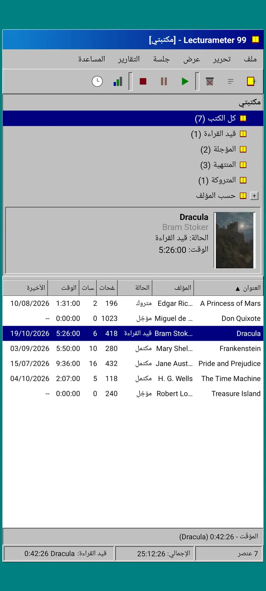
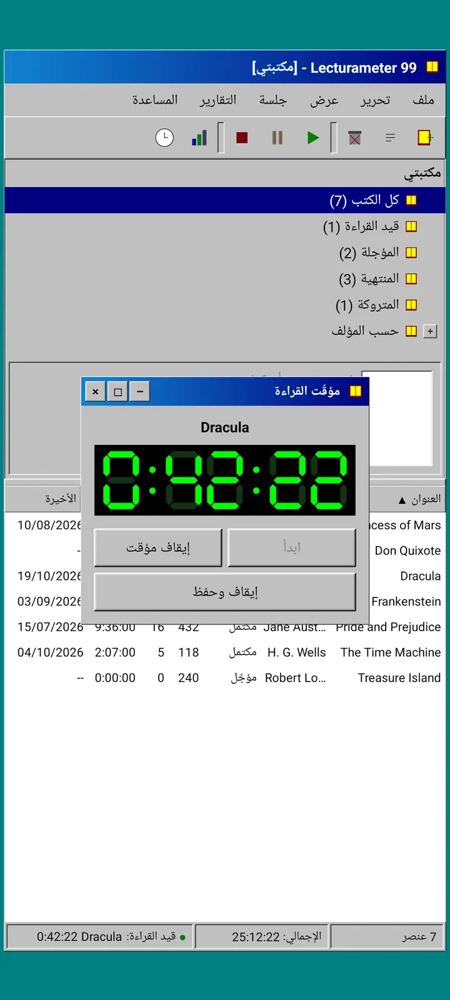
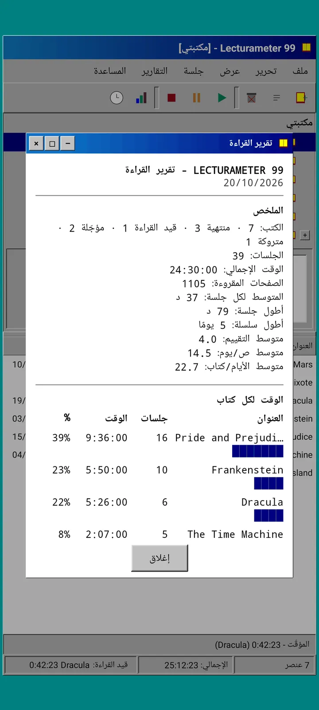
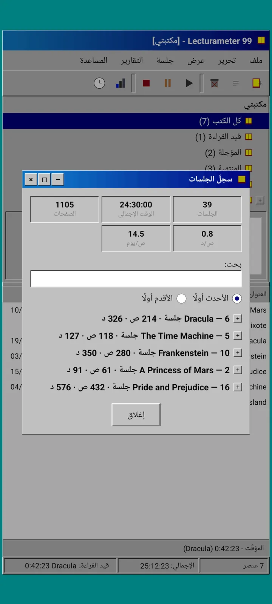
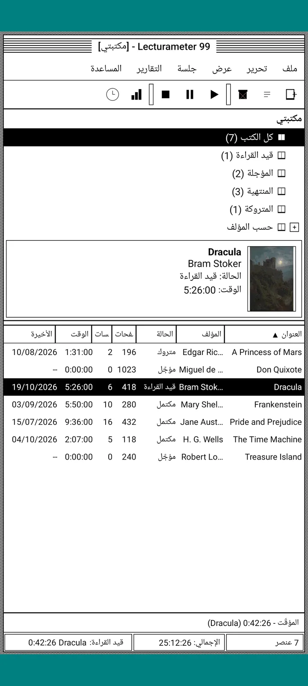
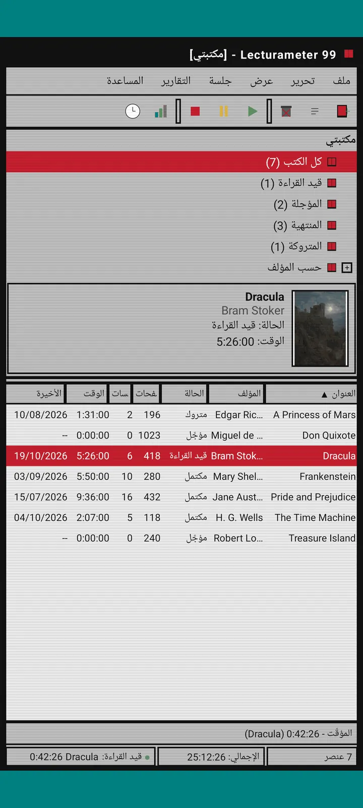
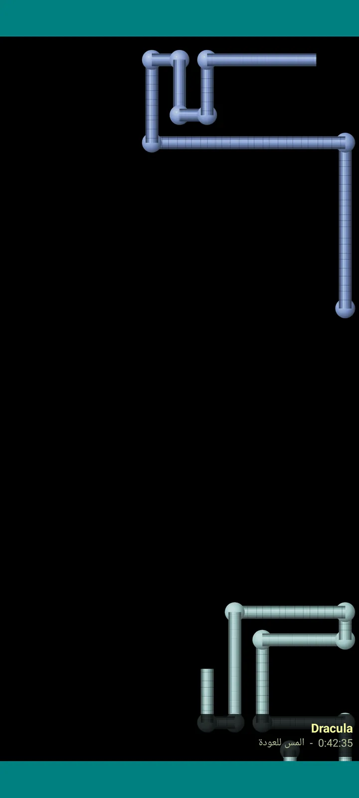

Lecturameter 1999
Lecturameter كما لو أنك ثبّته من قرص CD-ROM في عام 1999. واجهة بديلة للتطبيق، بنوافذ وقوائم وجداول، تفتح نسخك الاحتياطية الحقيقية.

ما هو
برنامج سطح مكتب من أواخر التسعينيات يعمل على هاتفك. نافذة واحدة فوق سطح مكتب بلون أزرق مخضر، وشريط قوائم، وشريط أدوات، وشجرة مجلدات، وجدول كثيف، وشريط حالة.
- شجرة المكتبة: كل الكتب، قيد القراءة، قيد الانتظار، المنتهية، المتروكة، وحسب المؤلف
- جدول بالعنوان والمؤلف والحالة والصفحات والجلسات والوقت وآخر قراءة. اضغط على رأس عمود للترتيب
- بحث حقيقي عن الكتب، باستخدام الفهرس نفسه الذي يستخدمه Lecturameter
- يستورد ويصدّر نسخة Lecturameter الاحتياطية وملف CSV من Goodreads. بياناتك تدخل وتخرج دون فقدان أي شيء

لماذا يوجد
تجربة: إعادة بناء فكرة Lecturameter من الصفر وفق مبادئ تصميم مختلفة جذريًا، دون المساس بالتطبيق الحقيقي. ومن بين كل إعادات التفسير، كانت نسخة 1999 هي الأحب إليّ، فأكملتها كتمرين ممتع وحوّلتها إلى واجهة كاملة. هي أبسط من Lecturameter عن قصد: إنها تجربة، ومن حيث المبدأ لن يُعمل على تطويرها أكثر.
- مؤقّت في نافذة عائمة بشاشة LCD خضراء. يتحرك، ويُصغَّر إلى شريط المهام، ويواصل العدّ في شريط الحالة
- عند الإيقاف، تسألك نافذة حفظ الجلسة عن صفحاتك وتحسب إيقاعك، تمامًا كما في Lecturameter
- الجلسات المحفوظة هي جلسات Lecturameter: تعود إلى التطبيق الحديث إذا صدّرت نسخة احتياطية من Lecturameter 1999 واستوردتها في Lecturameter.

تقرير القراءة
الإحصاءات تقرير مطبوع: ملخص، والوقت لكل كتاب بأعمدة من الكتل، والسرعة بالصفحات في اليوم، وتقويم السنة مرسوم بالأحرف، وآخر سبعة أيام.

سجل الجلسات
الجلسات مجمّعة حسب الكتاب في شجرة بعلامتي زائد وناقص، مع خمسة أرقام في الأعلى: الجلسات والوقت الإجمالي والصفحات والصفحات في الدقيقة والصفحات في اليوم.

حفظ الجلسة
التاريخ والدقائق والصفحة الأولى والأخيرة وتعليق. يحسب الملخص الصفحات والإيقاع أثناء الكتابة. وإذا وصلت إلى الصفحة الأخيرة، يسألك إن كنت أنهيت الكتاب.

Pagi 99
Pagi يسافر إلى 1999 أيضًا: بالبكسلات وطليقًا على الشاشة مثل مساعدي المكاتب في ذلك الزمن. يمكنك سحبه، ويقول جملة عند الضغط عليه، ويعرض نصائح في فقاعات صفراء.
السمات
Classic 98 مجانية وهي الافتراضية. وتضيف الحزمة ست سمات أخرى، لكل منها خلفيتها وأصواتها الخاصة.

اخترها من قائمة عرض
عرض، السمة... تفتح نافذة بالسمات السبع. يصل التغيير إلى كل النوافذ والمؤقّت وPagi دفعة واحدة.
- Classic 98، مجانية وافتراضية: نوافذ رمادية وأشرطة عناوين كحلية وسطح مكتب أزرق مخضر
- حزمة السمات: 1984 وGumdrop وMemory وTowers وCore و8-bit
- كل سمة تأتي بخلفية سطح مكتب خاصة وأصوات خاصة للضغطات والنوافذ والمؤقّت
- عرض، أصوات السمة يوقف الأصوات إذا كنت تقرأ في صمت

Classic 98
نوافذ رمادية وأشرطة عناوين كحلية وسطح مكتب أزرق مخضر. مجانية، وهي التي يُفتح بها التطبيق.

1984
سطح مكتب بالأبيض والأسود أحادي البت، بأنماط نقطية ونوافذ مربعة.

Gumdrop
بلاستيك ملوّن شفاف، وأزرار مستديرة، وخطوط في الخلفية.

Memory
قوائم جهاز ألعاب بالأقراص من التسعينيات، بدرجات أزرق داكنة.

Towers
جهاز ألعاب آخر بالأقراص من التسعينيات، بأزرق ليلي وخطوط زرقاء فاتحة.

Core
طرفية بالأسود والأخضر، كشاشة لا تنطفئ أبدًا.

8-bit
بكسلات كبيرة، وألوان قليلة، وحروف مربّعة.

جرّبها قبل أن تدفع
اضغط على سمة مقفلة فيتحوّل التطبيق كله إليها. وإذا أغلقت دون شراء، تعود السمة السابقة.
شاشات التوقف
تظهر فقط أثناء عمل المؤقّت عندما تترك الهاتف. تنتظر 1 أو 3 أو 5 دقائق، أو لا تظهر أبدًا. ضغطة واحدة تعيدك، ويواصل المؤقّت العدّ.

كتب طائرة
كتب بالبكسلات ترفرف بأغلفتها عبر شاشة سوداء.

حقل الحروف
حروف من أبجديات كثيرة تنساب أمامك، كحقل من النجوم.

أنابيب الصفحات
أنابيب مصنوعة من الصفحات ترسم نفسها حتى تمتلئ الشاشة.

Pagi القافز
Pagi يرتد عن حواف الشاشة.

ساعة القراءة
وقت الجلسة بأرقام LCD كبيرة.

أزياء لـ Pagi
ثمانية أزياء لـ Pagi 99. تختارها من عرض، زي Pagi...، ويمكنك تجربتها قبل الدفع.
- مشغّل كاسيت
- قبعة مقلوبة
- نظارات 3D
- نظارات شمسية نيون
- قرص مرن في اليد
- سترة جلدية
- حيوان أليف للجيب
- تاج من الكرتون
المتجر
التطبيق مجاني وكامل لتسجيل قراءتك. ما يمكنك شراؤه يغيّر شكله فقط.
التطبيق كله، بلا حد زمني.
- المكتبة والبحث والمؤقّت والجلسات
- تقرير القراءة وسجل الجلسات
- نسخة Lecturameter الاحتياطية وملف CSV من Goodreads، استيرادًا وتصديرًا
- سمة Classic 98 وPagi 99
- بلا حساب وبلا إعلانات
دفعات لمرة واحدة، بلا اشتراكات.
- حزمة السمات، €3.49: 6 سمات بخلفيات وأصوات، إضافة إلى شاشات التوقف
- شاشات التوقف، €1.99: شاشات التوقف الـ 5
- أزياء Pagi، €1.99: الأزياء الـ 8
- 1999 كاملًا، €4.49: السمات وشاشات التوقف والأزياء
إكراميات اختيارية في قائمة المساعدة، إن أردت أن تدعوني إلى قهوة.
يمكن تجربة السمات والأزياء مباشرة قبل الدفع. وإذا أغلقت دون شراء، يعود ما كان لديك.
ما الذي يتغير مقارنة بـ Lecturameter
مثل Lecturameter
- البيانات نفسها: الكتب والجلسات والحالات والتقييمات والملاحظات. ملف النسخة الاحتياطية واحد في التطبيقين.
- البحث عن الكتب بالعنوان أو المؤلف.
- مؤقّت حقيقي: يواصل العدّ في الخلفية حتى لو أغلقت التطبيق.
- بلا حساب، بلا إعلانات، بلا اتصال إلا للبحث عن الكتب.
- اللغات نفسها الموجودة في Lecturameter.
فقط في إصدار 1999
- واجهة سطح مكتب من 1999. بلا Material.
- نوافذ حقيقية: تسحبها وتصغّرها وتغلقها بعلامة الإكس.
- تقرير قراءة نصي، مع تقويم مرسوم بالأحرف.
- قائمة سياقية بالضغط المطوّل، واختصارات لوحة المفاتيح إذا وصلت لوحة مفاتيح.
- Pagi 99 بالبكسلات مع فقاعات النصائح.
- سمات اختيارية بخلفياتها وأصواتها الخاصة، وشاشات توقف أثناء عمل المؤقّت، وأزياء لـ Pagi.
ما تركه جانبًا عن قصد
- بلا Pro وبلا اشتراك. تسجيل قراءتك مجاني بالكامل، والمتجر يبيع المظهر فقط.
- بلا تحديات ولا بينغو ولا Wrapped سنوي ولا ودجتات.
- بلا جلسة غامرة ولا أصوات محيطة ولا نسخ احتياطي على Google Drive. تُحفظ النسخة الاحتياطية كملف.
اختبار مغلق
Lecturameter 1999 في مرحلة اختبار مغلق على Google Play. وسيأتي iOS لاحقًا، دون موعد بعد.
- انضم إلى المجموعة groups.google.com/g/lecturameter-1999
- سجّل كمختبِر على play.google.com/apps/testing/com.lecturameter.r1999
- ثبّته من Google Play
في اختبار مغلق على Google Play، وiOS لاحقًا. اقرأ تدوينة المدوّنة لتعرف من أين جاء وماذا تتوقع.